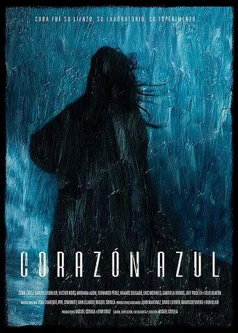

The genetics
Genetic engineering is the film's central metaphor. The Cuban state, under Castro, turns to genetics to manufacture the 'New Man' of revolutionary ideology, and the result is unstable, violent people who turn against their creators. The programme is a political project of human improvement, close to eugenics, and the film presents it as the source of a dystopia; critics read it as a critique of states that depend on mythical figures and utopian promises, not only in Cuba. Elena's search for the origin of her genetic code is a search for her humanity, and critics noted that the film's heavy digital manipulation of images mirrors its theme of genetic manipulation. The sources describe the programme only in general terms, without scientists or methods; the idea of engineering political character through genes has no scientific basis.
How genetics is portrayed
- Overall portrayal of genetics
- negative Genetic engineering serves a political myth of human improvement and produces chaos and paranoia.
- Outcome of the genetic intervention
- negative The experiments create dangerous, unstable people who form a terrorist group and draw a US invasion.
- Fidel Castro's 'New Man' programme
- villain Aim: ideological (negative). The state programme engineers humans to save the Revolution; the film presents it as the root of a dystopia and a critique of the state's utopian myths.
The story
Miguel Coyula's experimental Cuban science fiction film, shot clandestinely over ten years, is set in an alternative history in which Fidel Castro oversees a genetic engineering programme to create the 'New Man' and save the Revolution. The experiments produce dangerous, unstable individuals who form an anarchist terrorist group threatening to destroy the society that created them, and who also become the target of a United States invasion under Donald Trump. The elliptical story follows Elena, one of these engineered people, on a journey toward the origin of her genetic code in search of her own humanity, alongside other characters such as David, Tomás, Diana and Fernando. The film mixes avant-garde and genre filmmaking and is loosely connected to Coyula's earlier Red Cockroaches.